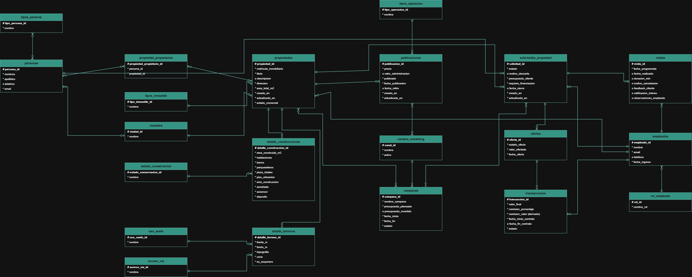

Modelo conceptual
Equipo: Harold Burgos, Sofía Camelo, Juan Triana Versión del diagrama: 2.3

El diagrama está en modelo_conceptual_2.1.drawio. A partir de este modelo pasamos al relacional BD_MCS v1.3.
1. Lectura del modelo
El conceptual representa el proceso comercial, no un CRM completo. Hay entidades de negocio (personas, propiedades, solicitudes, visitas, ofertas, transacciones, campañas, publicaciones, empleados) y catálogos (tipos, ciudades, estados). Los catálogos no inflan el dominio: evitan textos libres y sostienen integridad (R1, R11, R14).
Convención de atributos en el diagrama:
#identificador*obligatoriooopcional
2. Entidades significativas vs catálogos
El enunciado pide 6–10 entidades significativas. Las de proceso son estas diez:
personaspropiedadespropiedad_propietariospublicacionescampanassolicitudes_propiedadvisitasofertastransaccionesempleados
El resto son catálogos o especializaciones (detalle_construcciones, detalle_terrenos) necesarias por el tipo de inmueble, no para “llenar” el diagrama.
3. Construcciones EER utilizadas
| Construcción | Dónde | Por qué |
|---|---|---|
| Relación N:M | persona–tipo, persona–propiedad (dueños), publicación–canal, campaña–propiedad | El negocio es muchos-a-muchos. En el dibujo conceptual son líneas, no cajas. En el relacional y en el DDL se vuelven persona_roles, propiedad_propietarios, publicacion_canales y campana_propiedades. |
| Entidad asociativa | propiedad_propietarios | R2 exige dueños con identidad propia, distinta de la solicitud del prospecto. |
| Especialización (no disjunta, opcional) | detalle_construcciones y detalle_terrenos sobre propiedades | Un lote no tiene baños; un apartamento sí. Una casa puede tener ambos. No se fuerza XOR. |
| Roles | tipos_persona relacionado N:M con personas | La misma persona puede ser propietario y prospecto (R13). En el relacional eso es la tabla persona_roles. No se duplica personas. |
| Atributo derivado | transacciones.comision_valor | R16: se calcula; no se almacena como hecho independiente. |
No se usa categoría ni agregación: no aportan semántica extra en este recorte.
No hay atributos compuestos ni multivaluados en el conceptual. Teléfono y correo son simples (un valor de contacto de trabajo). Si más adelante hiciera falta historial de teléfonos, eso sería otra entidad; queda fuera de alcance.
4. Cardinalidades y participación
Notación: mínimo..máximo en cada lado. Participación obligatoria si el mínimo es 1; opcional si es 0.
| Relación | Cardinalidad | Participación | Justificación |
|---|---|---|---|
tipos_persona — personas | N:M | Una persona tiene ≥1 rol; un tipo puede no tener personas aún | R13. Catálogo previo a la carga. |
ciudades — personas | 1:N | Persona: ciudad opcional u obligatoria según datos; en implementación se deja ciudad obligatoria si hay dato de residencia | Ubicación del contacto para análisis regional. |
ciudades — propiedades | 1:N | Propiedad debe estar en una ciudad | Pregunta 1 (ubicación). |
tipos_inmueble — propiedades | 1:N | Propiedad debe tener tipo | Distingue casa, apto, lote. |
personas — propiedad_propietarios — propiedades | N:M | Propiedad con ≥1 propietario; persona puede no ser dueña | R2. |
propiedades — detalle_construcciones | 1:0..1 | Opcional | Solo inmuebles construidos (R15). |
propiedades — detalle_terrenos | 1:0..1 | Opcional | Lotes o casas con tierra (R15). |
estado_conservacion — detalle_construcciones | 1:N | Detalle de construcción debe tener estado | Atributo del inmueble edificado. |
uso_suelo — detalle_terrenos | 1:N | Terreno debe tener uso | Residencial, comercial, etc. |
acceso_via — detalle_terrenos | 1:N | Terreno debe tener acceso | Condición de comercialización. |
propiedades — publicaciones | 1:N | Propiedad puede no estar publicada aún; publicación debe ser de una propiedad | Historial de precios (R3, R14). |
tipos_operacion — publicaciones | 1:N | Publicación debe ser venta o arriendo | R14. |
publicaciones — canales_marketing | N:M | Un anuncio en varios canales | R3. |
canales_marketing — campanas | 1:N | Campaña debe tener canal | Pregunta 6. |
campanas — propiedades | N:M | Campaña cubre uno o varios inmuebles | R3, R4. |
personas — solicitudes_propiedad | 1:N | Solicitud debe tener prospecto; persona puede no tener solicitudes | R5, R6. |
propiedades — solicitudes_propiedad | 1:N | Solicitud debe tener propiedad | R6. |
campanas — solicitudes_propiedad | 1:N | Participación opcional en la solicitud | R10. |
empleados — solicitudes_propiedad | 1:N | Asesor opcional al crear el lead; en operación se asigna | R7. |
solicitudes_propiedad — visitas | 1:N | Visita debe pertenecer a una solicitud; solicitud puede no tener visitas | R7, R8. |
empleados — visitas | 1:N | Visita debe tener responsable | R7. |
solicitudes_propiedad — ofertas | 1:N | Oferta debe nacer de una solicitud | R9. |
ofertas — transacciones | 1:0..1 | A lo sumo un cierre por oferta aceptada | R12. |
empleados — transacciones | 1:N | Cierre con asesor responsable | Análisis de desempeño. |
empleados — propiedades | 1:N | Propiedad con asesor responsable (responsable_id) | Captación / gestión del inmueble. |
rol_empleado — empleados | 1:N | Empleado debe tener un rol | Asesor, coordinación, etc. |
Punto crítico (corrección respecto al relacional inicial):
solicitudes_propiedad no apunta a propiedad_propietarios. El dueño y el interesado son papeles distintos. Si se mezclan, las preguntas 2 a 8 dejan de ser respondibles.
5. Diccionario preliminar de entidades y atributos
5.1 Catálogos
| Entidad | Atributo | Req. | Dominio previsto | Significado |
|---|---|---|---|---|
tipos_persona | tipo_persona_id | sí | entero | Identificador. |
nombre | sí | texto (propietario, prospecto) | Rol de la persona frente a la inmobiliaria. | |
tipos_inmueble | tipo_inmueble_id | sí | entero | Identificador. |
nombre | sí | texto (apartamento, casa, local, lote, oficina) | Clase de inmueble. | |
tipos_operacion | tipo_operacion_id | sí | entero | Identificador. |
nombre | sí | texto (venta, arriendo) | Operación de la publicación. | |
ciudades | ciudad_id | sí | entero | Identificador. |
nombre | sí | texto | Municipio o ciudad de ubicación. | |
estado_conservacion | estado_conservacion_id | sí | entero | Identificador. |
nombre | sí | texto (excelente, bueno, regular, a_remodelar) | Estado físico de la construcción. | |
uso_suelo | uso_suelo_id | sí | entero | Identificador. |
nombre | sí | texto (residencial, comercial, mixto, rural) | Uso urbanístico del terreno. | |
acceso_via | acceso_via_id | sí | entero | Identificador. |
nombre | sí | texto (pavimentada, destapada, peatonal) | Tipo de acceso. | |
rol_empleado | rol_id | sí | entero | Identificador. |
nombre_rol | sí | texto (asesor, coordinador, administrador) | Cargo interno. | |
canales_marketing | canal_id | sí | entero | Identificador. |
nombre | sí | texto (web, Meta Ads, WhatsApp, referidos, feria) | Canal de adquisición. | |
activo | sí | booleano | Si el canal se usa hoy. |
5.2 Personas y empleados
| Entidad | Atributo | Req. | Dominio previsto | Significado |
|---|---|---|---|---|
personas | persona_id | sí | entero | Identificador del contacto (dueño o prospecto). |
nombres | sí | texto | Nombres. | |
apellidos | sí | texto | Apellidos. | |
telefono | no | texto | Contacto; puede faltar al llegar un formulario incompleto. | |
email | sí | texto único | Correo; clave candidata de negocio. | |
ciudad_id | sí | FK | Ciudad de residencia o de contacto. | |
empleados | empleado_id | sí | entero | Identificador interno. |
nombre | sí | texto | Nombre completo. | |
email | sí | texto único | Correo corporativo. | |
telefono | no | texto | Contacto. | |
fecha_ingreso | sí | fecha | Ingreso a la inmobiliaria. | |
rol_id | sí | FK | Rol. |
Empleados se modelan aparte de personas: son staff, no clientes. Evita mezclar nómina (fuera de alcance) con el pipeline comercial.
5.3 Propiedades y especialización
| Entidad | Atributo | Req. | Dominio previsto | Significado |
|---|---|---|---|---|
propiedades | propiedad_id | sí | entero | Identificador (R1). |
matricula_inmobiliaria | sí | texto único | Identificador registral. | |
titulo | sí | texto | Título comercial del aviso. | |
descripcion | no | texto largo | Texto libre del inmueble. | |
direccion | sí | texto | Dirección de ubicación. | |
area_total_m2 | sí | numérico > 0 | Área total. | |
estado_comercial | sí | disponible / en_negociacion / vendida / no_disponible | R11. | |
ciudad_id | sí | FK | Ubicación. | |
tipo_inmueble_id | sí | FK | Tipo. | |
responsable_id | sí | FK empleado | Asesor de captación. | |
creado_en / actualizado_en | sí | timestamp | Auditoría. | |
propiedad_propietarios | propiedad_propietario_id | sí | entero | Identificador del vínculo dueño–inmueble (R2). |
persona_id | sí | FK | Dueño. | |
propiedad_id | sí | FK | Inmueble. | |
detalle_construcciones | detalle_construccion_id | sí | entero | Identificador. |
propiedad_id | sí | FK única | Un detalle por propiedad, si aplica. | |
area_construida_m2 | sí | numérico | Área construida. | |
habitaciones, banos, parqueaderos | sí | entero ≥ 0 | Dotación. | |
pisos_totales, piso_ubicacion | sí | entero | Ubicación vertical. | |
anio_construccion | sí | entero | Año. | |
amoblado, ascensor, deposito | sí | booleano | Características. | |
estado_conservacion_id | sí | FK | Estado físico. | |
detalle_terrenos | detalle_terreno_id | sí | entero | Identificador. |
propiedad_id | sí | FK única | Un detalle por propiedad, si aplica. | |
frente_m, fondo_m | sí | numérico | Medidas de lote. | |
topografia | sí | texto (plana, inclinada) | Relieve. | |
zona | sí | texto (urbana, rural) | Contexto. | |
es_esquinero | sí | booleano | Esquina. | |
uso_suelo_id, acceso_via_id | sí | FK | Catálogos de terreno. |
5.4 Publicación y marketing
| Entidad | Atributo | Req. | Dominio previsto | Significado |
|---|---|---|---|---|
publicaciones | publicacion_id | sí | entero | Identificador del aviso. |
propiedad_id | sí | FK | Inmueble publicado. | |
tipo_operacion_id | sí | FK | Venta o arriendo. | |
precio | sí | numérico > 0 | Precio publicado. | |
valor_administracion | no | numérico | Cuota de administración, si aplica. | |
publicada | sí | booleano | Si el aviso está activo. | |
fecha_publicacion | sí | fecha | Alta del aviso. | |
fecha_retiro | no | fecha | Baja; nula si sigue activo. | |
campanas | campana_id | sí | entero | Identificador. |
canal_id | sí | FK | Canal principal. | |
nombre_campana | sí | texto | Nombre. | |
presupuesto_planeado | sí | numérico | Presupuesto. | |
presupuesto_invertido | no | numérico | Ejecutado. | |
fecha_inicio, fecha_fin | sí | fecha | Vigencia. | |
estado | sí | texto (planificada, activa, cerrada) | Ciclo de la campaña. |
Las N:M publicacion_canales y campana_propiedades no son entidades de negocio en el ER; aparecen en el relacional.
5.5 Pipeline comercial
| Entidad | Atributo | Req. | Dominio previsto | Significado |
|---|---|---|---|---|
solicitudes_propiedad | solicitud_id | sí | entero | Oportunidad comercial (R6). |
persona_id | sí | FK | Prospecto, no dueño. | |
propiedad_id | sí | FK | Inmueble de interés. | |
campana_id | no | FK | Origen de marketing (R10). | |
empleado_id | no | FK | Asesor asignado. | |
estado | sí | texto (nueva, en_seguimiento, en_negociacion, ganada, perdida, descartada) | Preguntas 4 y 8. | |
motivo_descarte | no | texto (hasta 200) | Obligatorio en práctica si estado = descartada. | |
presupuesto_cliente | sí | numérico | Capacidad declarada. | |
requiere_financiacion | sí | booleano | Si necesita crédito. | |
fecha_cierre | no | timestamp | Cierre ganado o perdido. | |
creado_en / actualizado_en | sí | timestamp | Auditoría. | |
visitas | visita_id | sí | entero | Actividad de seguimiento (R7, R8). |
solicitud_id | sí | FK | Oportunidad. | |
empleado_id | sí | FK | Quién acompaña. | |
fecha_programada | sí | timestamp | Agenda. | |
fecha_realizada | no | timestamp | Ejecución. | |
duracion_min | no | entero | Duración. | |
motivo_cancelacion | no | texto | Si no se realizó. | |
feedback_cliente | no | texto | Comentario del prospecto. | |
calificacion_interes | no | entero 1–5 | Interés percibido. | |
observaciones_empleado | no | texto | Nota interna. | |
ofertas | oferta_id | sí | entero | Negociación (R9). |
solicitud_id | sí | FK | Oportunidad. | |
estado_oferta | sí | pendiente / aceptada / rechazada / caducada | No es booleano: hay más de dos estados. | |
valor_ofertado | sí | numérico > 0 | Monto. | |
fecha_oferta | sí | timestamp | Fecha. | |
transacciones | transaccion_id | sí | entero | Cierre (R12). |
oferta_id | sí | FK única | Oferta que cierra. | |
empleado_id | sí | FK | Asesor del cierre. | |
valor_final | sí | numérico | Valor acordado. | |
comision_porcentaje | sí | numérico | Porcentaje pactado. | |
comision_valor | sí | derivado | valor_final * comision_porcentaje / 100. | |
fecha_inicio_contrato | sí | fecha | Inicio. | |
fecha_fin_contrato | no | fecha | Fin (arriendo); nula en venta. | |
estado | sí | texto (activa, cerrada, anulada) | Estado del contrato. |
6. Cómo se recorre el proceso en el modelo
Propietario ──N:M── Propiedad ──1:N── Publicación (precio, venta/arriendo)
│
├── 0..1 Construcción / 0..1 Terreno
│
Campaña ──N:M─────────┤
│
Prospecto ──1:N── Solicitud ──1:N── Visita
│
└── 1:N── Oferta ──0..1── TransacciónEse camino cubre R1–R16 y las diez preguntas de información.
7. Qué dejamos fuera de este modelo
- Una persona tiene un teléfono y un correo.
- Los empleados no están dentro de
personas: no modelamos usuarios ni login. - El seguimiento estructurado son las visitas. WhatsApp, llamadas y notas van en MongoDB, con el mismo número de solicitud.
- No incluimos documentos legales ni el pago de la comisión.
- El estado comercial vive en la propiedad y el aviso vive en la publicación. El trigger del cierre mantiene ambos alineados.